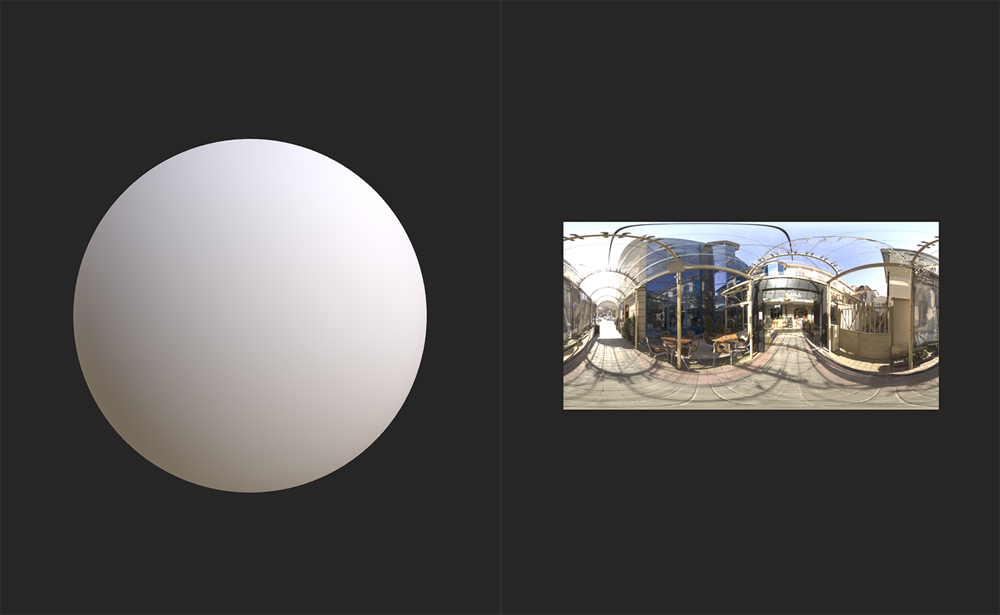
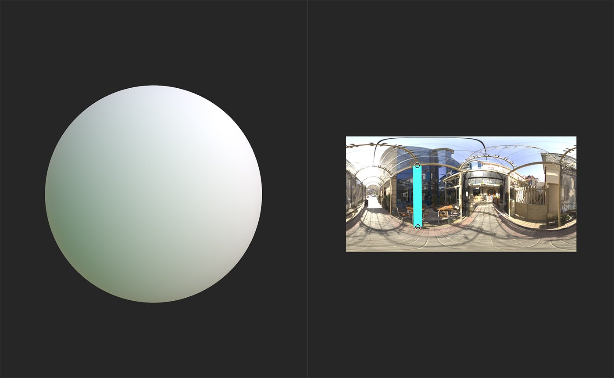

In: HDRI Tools
Add a Line Light to your environment light.
The images below show how you can use a Line Light to adjust the lighting of your environment.

The image above shows a sphere with no modifications to the environment light.

After adding a Line Light the sphere's appearance has noticeably changed.
Basic parameters
Shape
Position Coordinates
Available parameters depend on the selection made for Basic parameters > Position Mode. If Ground/Ceiling or Distance from Origin are selected, the following parameters are available:
If World Position is chosen in Basic parameters > Position Mode the following parameters are available:
Background